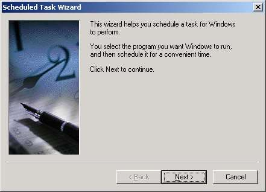

by Troy Janisch, Online Arts
original document
at Online Arts
site
For the sake of brevity, I'll assume that you can download and install Analog and Report Magic. If you can't do that, you probably shouldn't be writing scheduled batch files anyway.
Step 1 - Your Analog CFG file
There is nothing
magical about setting up a good CFG file for Analog. Since CFG files
are roughly the same for each platform, I won't waste your time here.
Instead, I'll provide you with a few useful links:
Report Magic is a tool that makes Analog reports look prettier. Like Analog, its free, so there is no reason not to use it.
Step 2 - Your Report Magic INI file
Report Magic
INI files need to know where to find your DAT file and where to write
the HTML files for the Web Stats report. In this case, here are the
relevant links:
Step 3 - Your Manual Batch File
If you're setting
up Analog or Report Magic for the first time, you'll want to create a
batch file that generates historical reports - those for previous
month/years that you'll want to view statistics for.
The manual batch file needs to include two lines for each report generated. The first is the Analog command. The command above specifies: 1) the location of analog.exe; 2) the log files to be included in the report; and 3) the .CFG file to be executed. For example:
call c:\analog\analog.exe c:\LogFiles\W3SVC9\ex0203*.log +g"c:\stats\config\my.cfg" -GThe second line for each report is the Report Magic command. This command specifies: 1) the location of the rmagic.exe; and 2) the location of the .INI file. For example:
call c:\analog\rmagic.exe c:\stats\config\my.iniThis example generates monthly reports for 2002.
Step 4- The Automated Batch File
The automated
batch file takes the same format as a manual batch file. However, at
the beginning of the batch file you must first fetch the current
month/year:
@ echo offThen, use the same commands, replacing the appropriate portion of the log file name:
set yy%date:~12,2%
set mm=%date:~4,2%
call c:\analog\analog.exe c:\LogFiles\W3SVC9\ex%yy%%mm%*.log +g"c:\stats\config\my.cfg" -GThis example generates a monthly Web stats report.
call c:\analog\rmagic.exe c:\stats\config\my.ini
Step 5 - Use Windows Task Scheduler
Using Windows Task Scheduler, specify a time when you want the batch file to run. For detailed instruction, visit the Analog web site

Ta da! You're automatically generating Analog web stats report.